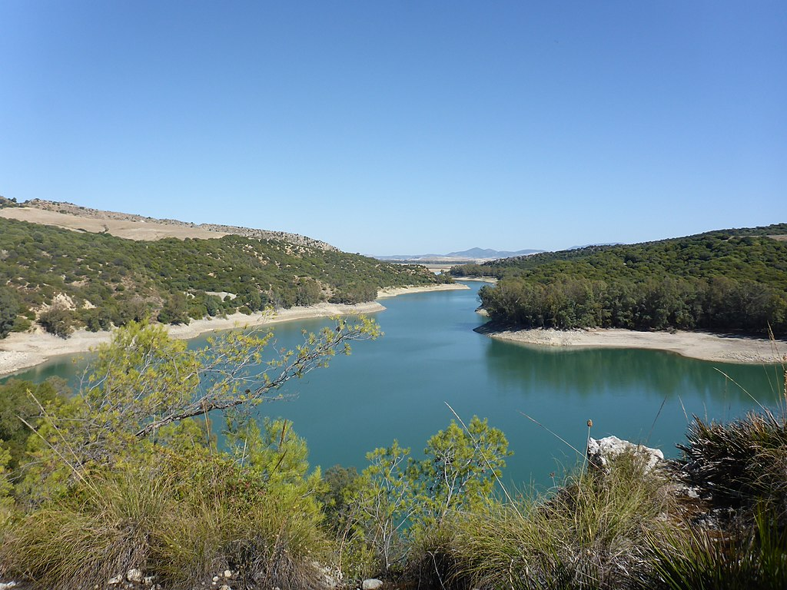

Asentado junto al gran embalse al que da nombre, Bornos es uno de los pueblos gaditanos que ofrece horizontes más abiertos, además del fulgor de sus tradicionales casas blancas encaladas. Su casco antiguo está declarado Bien de Interés Cultural.